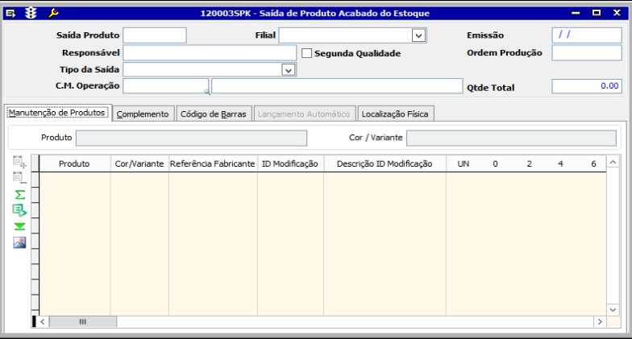
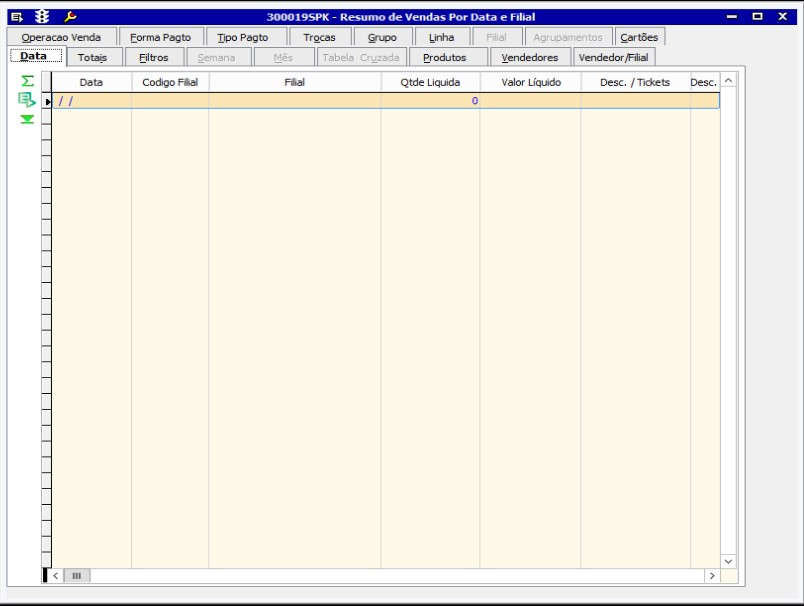
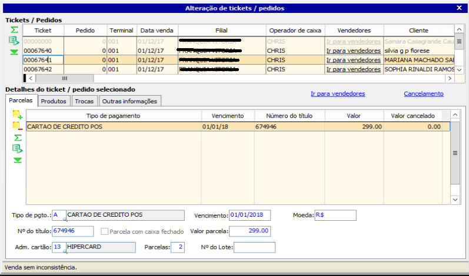

Linx ERP Retaguarda
O LinxERP é um sistema de gestão empresarial totalmente integrado, que apresenta alto nível de aderência ao segmento do vestuário, com uma interface gráfica amigável e implantação otimizada. O sistema prevê todos os processos, desde o início da produção de uma confecção até o momento da venda dos artigos ao consumidor final, incluindo cada detalhe que compõe este ciclo.
Cadastrar/Desativar Funcionários
- Acessar o linx, clique no seletor, selecione a opção: Configurações
- Na opção: Configurações De Lojas selecione a opção 300006 Cadastro de Vendedores De Lojas
- O sistema abrirá a tela abaixo:
-
Para incluir um NOVO cadastro, clique no botão Incluir (F5).
- Para desativar um cadastro de funcionária é necessário apenas inserir o código do funcionario e clicar em alterar em seguida preencher o campo Desativação com a data correspondente e clicar na opção Salvar.


Nessa tela os campos necessários para cadastro de funcionários são:
- Vendedor - Não pode ser alterado apos a criação do cadastro.
- Filial - Clique com o botão direito e selecione a filial correspondente.
- Apelido - Pode ser alterado! Será o apelido que constará na lista de vendedores do LinxPOS.
- CPF - Dever sempre ser preeenchiodo um CPF válido.
- Cidade
- UF
- Cargo Ex: VENDEDOR / GERENTE
Após inserir todas as informações, clique no botão Salvar.

OBS: NUNCA excluir um cadastro de funcionário! Caso a funcionária for desligada da loja, apenas preencha o campo Desativação com a data correspondente.
Saídas Proprietários/Funcionários
Esse manual tem o intuito de mostrar a saída das retiradas para uniformes e peças para os franqueados.
- Ir em Seletor

- Gestão de Suprimentos/Estoque
- Saídas de Mercadorias
- Saída Física de Estoque
- 120003 Saída de Produto Acabado do Estoque
Irá abrir a tela 120003 – Saída de Produto Acabado do Estoque
Sempre que for realizar alguma inserção de informação no sistema, escolher a opção de Incluir
Ao incluir, escolher o Tipo de Saída:
- Saída p/ Funcionários
- Saída p/ Proprietários
Existem duas formas para inserir a informação do produto que está saindo do estoque:
- Na aba de Manutenção de Produtos e ir na inserção de produtos manualmente, vide print abaixo:
- Ir na aba de Código de Barras e bipar o código de barras do produto que está saindo do estoque
Nessa opção, informar a Referência base do produto xx.xx.xxxx, cor xxx e o tamanho que está saindo

Feito o tipo de saída desejado, basta clicar em Salvar 
Inventário
Para ter um estoque correto e com o mínimo de erros e peças negativas, o correto é realizar o inventário a cada troca de coleção, esse é o melhor período, visto que o estoque está bem baixo.
- Ir em Seletor
- Controle De Estoque
- Inventário De Estoque
- 005015 Contagem Física De Produto Acabado

Como informado anteriormente, sempre que for inserir uma informação no sistema, ir em Incluir
Informar o nome da Contagem e caso tenha mais de uma filial, escolher a filial desejada. Ir na aba Selecionar Itens e seguir as seguintes informações:
Informar a data da contagem, lembrando que a informação é Contagem no Início do Dia, favor ter atenção à essa data. Marcar a opção Inclui Itens Inativos e após clicar no botão Incluir Itens na Contagem – Manual.
Após, marcar a opção Usar saldo do dia anterior ao do dia da contagem e clicar em Trazer o Saldo do Estoque dos Produtos. Após, escolher o arquivo da contagem ... e Importar Contagem.

Terminando a inserção das informações e arquivo de contagem, ir na próxima aba Complementos/Ajustes

Nessa tela teremos a informação total de Contagem, Saldo de Estoque e Diferença, quando houver.
Basta clicar em Salvar que o sistema irá informar a divergência de todos os produtos. Depois será necessário verificar as divergências e apurar o que pode ter acontecido.
Apurado todas as divergências, tratar o arquivo de contagem, se necessário criar uma cópia e mexer na cópia, mantendo o arquivo original da contagem intacto e refazer o processo afim de manter a contagem de acordo com o saldo.
Todo os saldos e estoque corrigido, clicar em Ajustar Estoque com as Diferenças de Contagem. Ao realizar esse processo, o estoque irá ajustar de acordo com a contagem realizada.
Consulta de Estoque/Notas de Origem
Esta opção visa obter melhor detalhe de estoque, como toda a movimentação do produto e nota fiscal de origem dos produtos.
- Ir em Seletor
- Controle De Estoque
- Consultas De Estoque
- 120007 Consulta De Estoque Por Cor E Filial

Inserir o código do produto e ir na opção Pesquisar
Realizado a pesquisa, ir na aba Extrato.

Na aba Extrato, teremos toda a movimentação do produto em questão, inclusive notas de origem e vendas.
Essa tela mostra toda a movimentação e saldo do produto, mostra também o custo do produto.

Os tamanhos emVermelho mostram a movimentação, em Azul, o saldo após a movimentação.
Geralmente a primeira linha é a informação da entrada do produto ou nota fiscal de origem.

Nota fiscal 171215 emitida em 18/11/2017
Consulta/Alteração de Clientes Varejo
Esta tela serve somente para alteração no cadastro de clientes cadastrados na loja
- Ir em Seletor
- Gestão Varejo
- Clientes Varejo
- 300005 Cadastros De Clientes Varejo
OBS: O código de cadastro do cliente é o CPF do mesmo.
Irá abri a tela 300005
Inserir o código do cliente e clicar em Pesquisar
Após a pesquisa realizada, clicar em Alterar  e alterar as informações desejadas.
e alterar as informações desejadas.
Feito isso, basta clicar em Salvar
Consulta de Tickets
Nessa tela, você pode consultar as vendas realizadas no LinxPOS.
- Ir em Seletor
- Gestão Varejo
- Vendas Por Loja
- 300027 Consulta Ticket De Loja

Irá abrir a seguinte tela:

Basta inserir as seguintes informações:
- Código da Filial
- Ticket
- Data da Venda
Feito isso, basta clicar em Pesquisar
Realizando essa pesquisa, você terá acesso à todas as informações do ticket pesquisado.
Consulta de Venda por Data
Nessa tela, é possível realizar pesquisa de toda a movimentação da Loja Saídas/Vendas como Markup, Custo Médio, Preço de Custo - Total e Preço de Venda - Total.
- Ir em Seletor
- Gestão Varejo
- Vendas Por Loja
- Vendas Por Loja
- Resumo DeVendas Por Data E Filial
Irá abrir a seguinte tela:
Ir em Filtros, no campo Faixa escolher a opção data e informar o período desejado.
Após a inserção dos parâmetros, clicar em Pesquisar
Irá trazer as informações das vendas do período desejado.
Caso pretenda verificar as informações detalhadas acima. Ir na aba Totais
Como informado, na aba Totais , teremos todas as informações.
Produto Acabado
Nessa tela, é possível termos todas as informações do cadastro do produto. Essa tela serve apenas para consulta.
- Ir em Seletor
- Gestão Varejo
- Produtos/Estoques
- 002006 Produtos Acabados

Irá abrir a seguinte tela:

Basta inserir o código do Produto xx.xx.xxxx e clicar em Pesquisar
Após a pesquisa, o resultado obtido será assim:
Alteração de Ticket
Essa opção tem por finalidade alterar informações de venda antes da integração do Caixa na Retaguarda, tais como número de parcelas, título e etc.
- Ir em Seletor
- Gestão Financeira
- Conferência E Integração De Lojas
- 009077 Conferência E Integração De Venda De Loja

Irá abrir a seguinte tela:

Clicar em Avançar.
Marcar na opção Alteração de tickets de loja específicos e clicar em Avançar novamente.
Informar número de ticket e data da venda e novamente clicar em Procurar

Realizando a procura do ticket informado, alterar as informações necessárias e fechar a janela acima. Voltará a tela inicial e o botão Avançar estará disponível. Basta clico-lo

Abrirá a tela:
Marcar somente a opção Enviar valores para a contabilidade e clicar no botão Concluir.
Conferência e Integração do Caixa
Nessa tela é confirmado as informações do fechamento de Caixa realizado na loja.
- Ir em Seletor
- Gestão Financeira
- Conferência E Integração De Lojas
- 009077 Conferência E Integração De Venda De Loja

Irá abrir a seguinte tela:

Clicar em Avançar.
Marcar na opção Resumo de parcelas de lojas para conferência e atribuição de número de lote e clicar em Avançar novamente.
Abrirá a tela:
Marcar a opção Conferêrencia de todos os tipos de pagamentos de venda e clicar no botão Avançar.
Escolher o período e filial e novamente clicar Avançar.
Nessa parte, é realizada a conferência da conferência. É necessário confirmar se realmente as informações correspondem, feito isso, clicar novamente em Avançar.

Marcar somente a opção Enviar valores para a contabilidade e clicar no botão Concluir
Carta de Correção
Esta opção tem por finalidade gerar a carta de correção das notas emitidas.
- Ir em Seletor
- Gestão Fiscal
- 009057 Carta De Correção

Irá abrir a seguinte tela:
Selecione na barra de menu superior da tela a opção Incluir irá habilitar a seguinte janela:
Os campos necessários para o filtro são:
- Nota Fiscal
- Emissão
- Série NF
Feito isso, clique em Avançar.
Irá aparecer as seguintes informações, acesse a aba Irregularidades e clique no botão azul Incluir e em seguida, clique com o botão direito do mouse no campo Irregularidades, que aparecerá uma lista com as opções para gerar a carta de correção.
Escolha a opção desejada, o exemplo usado foi a irregularidade de peso, ficará assim:
Mudança na informação referente ao peso, de 0 kg para 10 kg
Alterado a informação desejada, clique em Salvar
Após salvar, clique no botão Envia CC-e